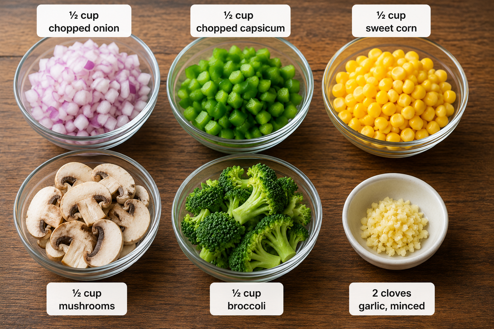

Steps to follow:
- Wash all vegetables.
- Chop them into small pieces.
- Heat 1 tablespoon butter in a pan.
- Add garlic and sauté for 30 seconds.
- Add onion and cook for 2 minutes.
- Add the remaining vegetables.
- Cook for 4–5 minutes until slightly tender.
- Remove from the pan.